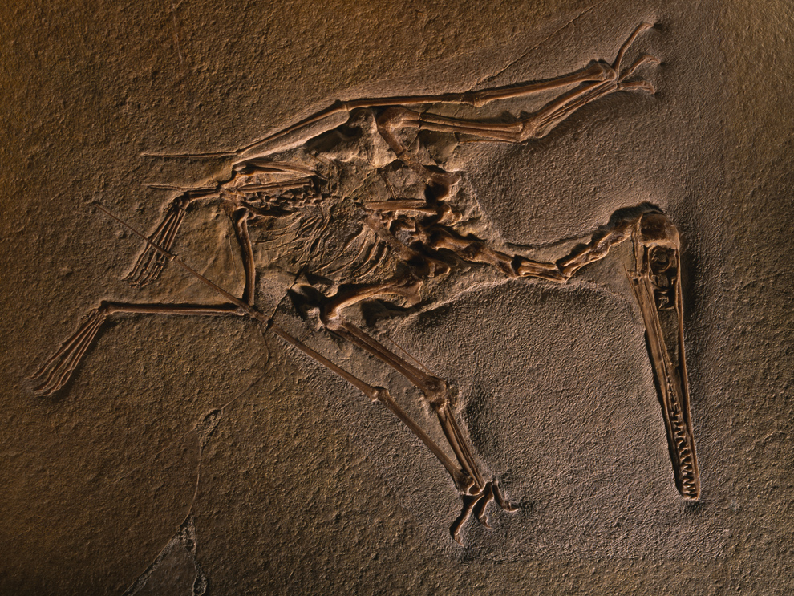

The study of the history of life on Earth through fossils.
Fossil of the pterosaur, Pterodactylus kochi that is preserved in limestone.

Observing the flow of time
Fossils are remains of animals, plants, fungi, bacteria and single-celled organisms. Fossils may be fully or partially replaced in rock, although fossils can also be impressions left behind by said organisms.
The study of fossils allows paleontologists to uncover information about the organisms and their environment that is far removed from our modern world.
The Subdisciplines of Paleontology:
Vertebrate Paleontology
The study of fossils of animals with backbones. Fossils of dinosaurs, reptiles, birds, and mammals fall under this category.
Invertebrate Paleontology
The study of fossils of animals without backbones. Fossils of insects, crustaceans, molusks, and corals fall under this category.
Paleobotany
The study of fossilized plants. Paleobotanists study parts of plants, such as leaves, seeds, and even impressions left by the plants.
Micropaleontology
The study of fossils of microrganisms or microscopic organisms. Algae, pollen, bacteria, and other forms of microfossils are generally studied by Micropaleontologists.
Challenges
The field of paleontology is rarely straightforward. Fossils are a rare natural occurrence that can only happen under specific conditions and luck.
Even the history of paleontology is very murky, many discoveries being incomplete and compromised. Some paleontologists were also dishonest and were out for their own personal interests.
Today, it continues to be plagued with controversial figures and private companies.